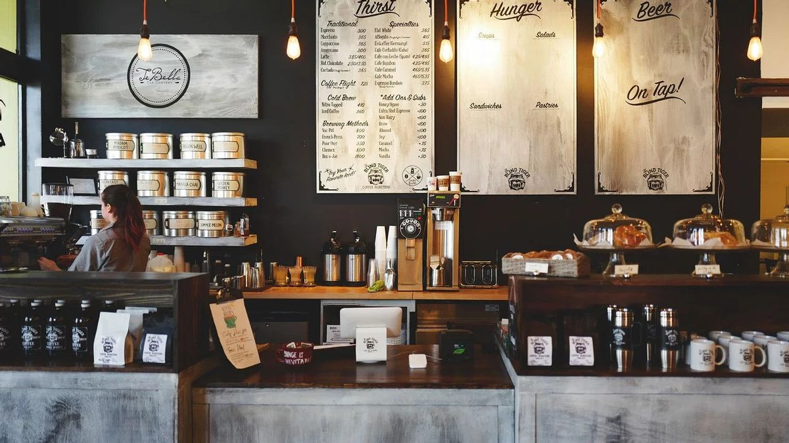
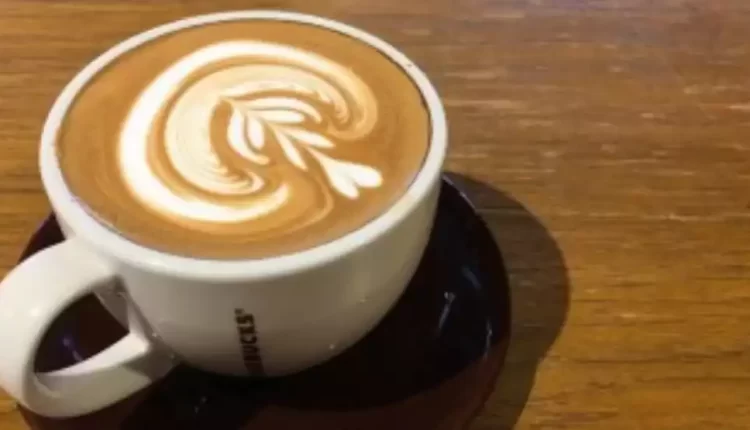
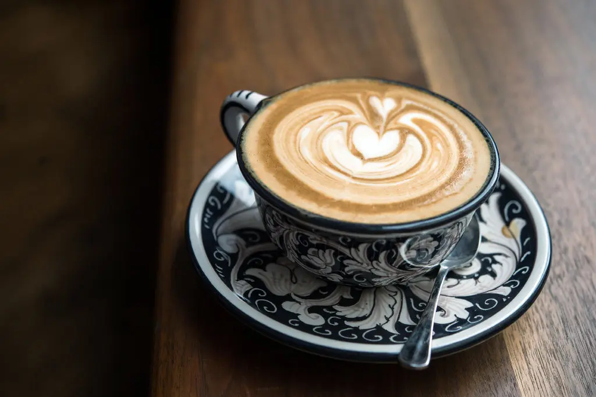

Perkenalan

Sesuai semboyan kami, kopi kami terbuat dari citarasa asli, biji kopi asli indonesia
Mimpi kami terbuat dari biji murni kopi murni yang ditanam dengan penuh perhatian.
Ketika digiling akan memercik harum nikmat khas biji kopi. Ketika diminum saking nikmatnya,
menyelimuti hati semua orang sampai mancanegara.
Produk Kami
Family Caffe latte

Ramah kepada siapa saja - itulah family caffelatte yang siap menghibur dengan pesan dan wujud manis yang kian menghangatkan suasana.
Kami senantiasa membuat seluruh pengunjung tak hanya sekedar menikmati gurih dan nikmatnya kopi.
Namun, kami siap menyambut serta menghangatkan suasana hati penikmat kopi.
Original Cappuccino

Citarasa Ekspresso, teksture milk, krim foam, seluruhnya berada dalam paduan original capucino yang terasa lembut di lidah.
Dengan biji kopi pilihan hasil pengolahan, disertai dengan pengawasan yang mumpun, kenikmatan capucino original siap mewarnai hari hari anda bersama secangkir kopi.